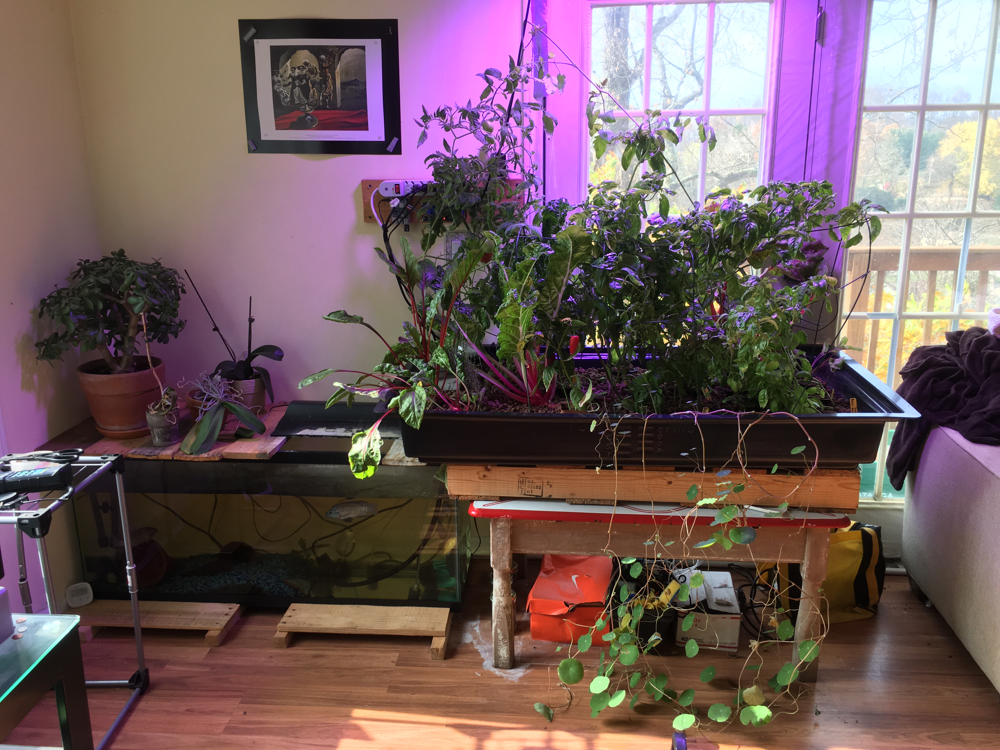

Hello, I'm Johnny O'Neal
About Me
I read direct from the world's best minds, from antiquity to present. I aim to make a positive impact in the world by integrating these readings, with my own personal touch, toward Sustainable Development, Finance, Physics, Art, and Finding Solutions to the World's Most Important Problems, and Opportunities.
My Projects

Career & Education
Culinary Background (2010 - 2015)
Undergraduate Education (2011 - 2015)
- Appalachian State University – B.S. in Sustainable Development (Minor in Appropriate Technology)
Graduate Education (2015 - 2017)
- Appalachian State University – M.S. in Sustainable Technology in the Built Environment
Post-Graduation
- Green Mountain Energy (2017) – Sales
- BrightFarms (2017 - 2026) – Apprentice Grower, Head Grower, Corporate Grower
Projects I Follow
- The Sanctuary - Maritime Retreat in Beaufort, NC.
- Bitcoin - Fixed Money.
Quotes
"Humanity needs a vision of an expanding and unending future. This spiritual craving cannot be satisfied by the colonization of space. The true frontier for humanity is life on Earth, its exploration and the transport of knowledge about it into science, art and practical affairs."
— E. O. Wilson
"Fix the Money, Fix the World."
Get in Touch
Find me on X or Goodreads.